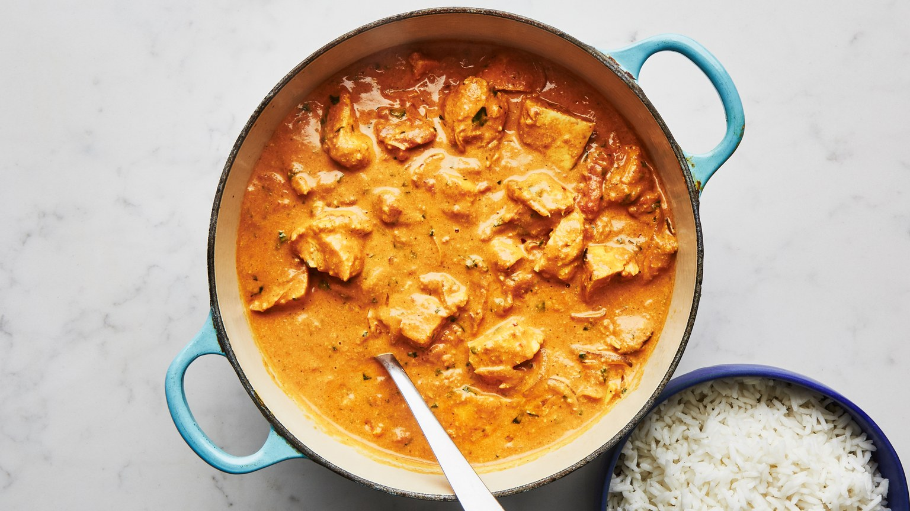

For this chicken tikka masala recipe, the yogurt helps tenderize the chicken; the garlic, ginger, and spices in the marinade infuse it with lots of flavor. This is part of BA's Best, a collection of our essential recipes.
Makes 6 servings
Chicken can be made 2 days ahead. Cover; chill. Reheat before serving.
Combine garlic, ginger, turmeric, garam masala, coriander, and cumin in a small bowl. Whisk yogurt, salt, and half of spice mixture in a medium bowl; add chicken and turn to coat. Cover and chill 4-6 hours. Cover and chill remaining spice mixture.
Heat ghee in a large heavy pot over medium heat. Add onion, tomato paste, cardamom, and chiles and cook, stirring often, until tomato paste has darkened and onion is soft, about 5 minutes. Add remaining half of spice mixture and cook, stirring often, until bottom of pot begins to brown, about 4 minutes.
Add tomatoes with juices, crushing them with your hands as you add them. Bring to a boil, reduce heat, and simmer, stirring often and scraping up browned bits from bottom of pot, until sauce thickens, 8-10 minutes.
Add cream and chopped cilantro. Simmer, stirring occasionally, until sauce thickens, 30-40 minutes.
Meanwhile, preheat broiler. Line a rimmed baking sheet with foil and set a wire rack inside sheet. Arrange chicken on rack in a single layer. Broil until chicken starts to blacken in spots (it will not be cooked through), about 10 minutes.
Cut chicken into bite-size pieces, add to sauce, and simmer, stirring occasionally, until chicken is cooked through, 8-10 minutes. Serve with rice and cilantro sprigs.
